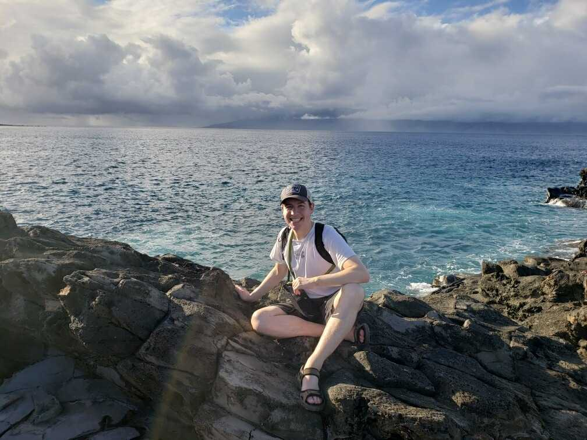

|  |
Scott RapponottiBaseball Analyst for the Atlanta Braves and World Traveler. Instagram Account : srapponotti I am a data scientist in baseball operations for the Atlanta Braves. I've traveled to Spain, Japan, Portugal, and France in the past two years. |
| Dates | Work Experience |
|---|---|
| Sep 2015 to May 2017 | Undergraduate Researcher at Gerogia Tech |
| May 2017 to Dec 2017 | Baseball Analyst for Miami Marlins |
| Jan 2018 to Present | Baseball Analyst for Atlanta Braves |
| R | 🌟🌟🌟🌟🌟 |
| Python | 🌟🌟🌟🌟 |
| SQL | 🌟🌟🌟🌟 |
| HTML | 🌟 |
Link to Contact Information